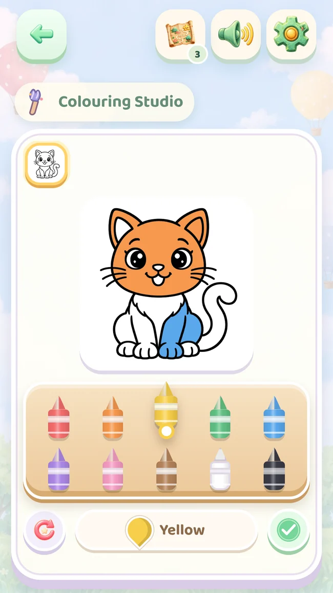
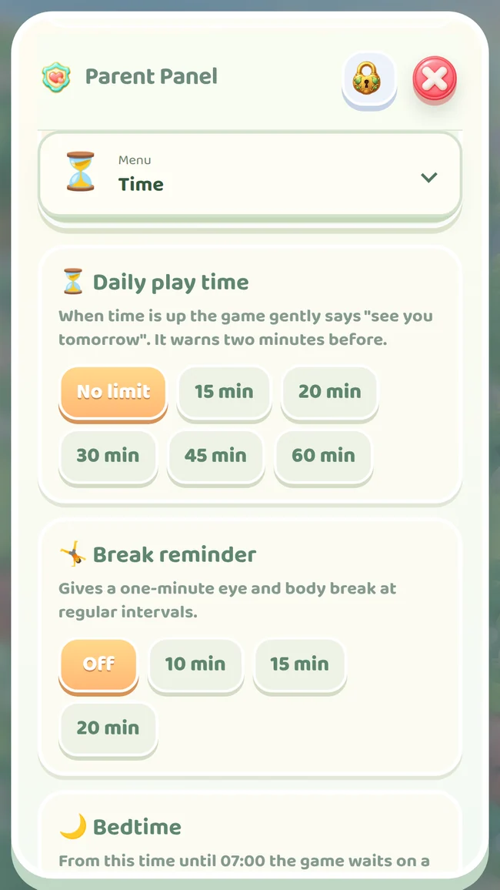

Real game screen
Look, match, try.
Little matching games with familiar shapes.
Little adventures for ages 2–5
Follow a kitten into a world of shapes, colours and little stories. Let them tap, try and create, with you beside them for the discoveries.
Currently in closed testing. Google Play access depends on your test account eligibility.



A little curiosity at every stop
Short activities share one journey. Matching, tracing, memory, counting and creative play take turns as the challenges gradually grow.
Real game screen
Little matching games with familiar shapes.
Real game screen
Their colours, their colouring pages.
A full-version scene
Create a scene with earned stickers.
Real game screen
Little hands bring the picture together.

Together, at your pace
An adult check protects the parent area, where you can plan play time, see what they have tried and find ideas for time together.
Daily play time, break reminders and bedtime settings.
Completed activities and time spent. A play summary, not a developmental or ability test.
Save or share artwork, and prepare A4 colouring sheets to print.
Familiar pictures, new words
Choose a picture, listen to its name, then find the same thing at home. All five languages are available in both versions.
Turkish and English voices are bundled and work offline. Spanish, Brazilian Portuguese and Indonesian use device speech; voice availability and offline use depend on the installed language pack.
The free stops can be replayed. Earned drawings and medals stay. The full collection is available through an optional one-time parent purchase.
Open the parent area in the game, then Full version. Google Play shows the current price and asks you to confirm payment. This website does not take payments. There is no subscription.
It gives access to the full collection. Stops still unlock in order as they are completed; a purchase does not skip progress.
The Android app’s game content works offline. Purchases and restoration require internet. Offline speech in the other three languages depends on the installed device voice pack.
Restore the purchase in the parent area using the same Google Play account. Progress and creations are saved on the device; restoring the purchase does not automatically move them.
No. Stars are game rewards. The parent summary shows completed activities and play time; it does not score a child’s development or ability.
Follow a kitten into a world of shapes, colours and little stories. Let them tap, try and create, with you beside them for the discoveries.
Currently in closed testing. Google Play access depends on your test account eligibility.